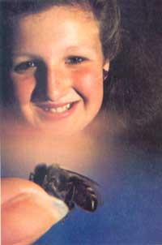
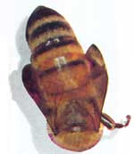

The Bees And Me
Mother's Children
By Ruth McDaniel
May/June 1988
This 14-year-old raises honeybees in downtown Baltimore!
I've shared half my life with honeybees. For seven years, my family has kept bees on the back porch of our second-floor city apartment. Even though we live in the city and may have as many as half a million bees busily flying in and out of our 12 hives, the peaceful insects seldom bother us or our neighbors.
Beginnings
The love of beekeeping is contagious: You get it from other beekeepers. In our case, it was my grandfather who first caught "bee fever" and then spread it to the rest of our family. Grandpa learned the skill in order to increase the production of his country orchard and garden. (Bees pollinate many fruit and vegetable crops. Indeed, the pollination services of honeybees are so valuable that many farmers rent bee colonies to fertilize their crops.)
Many people don't want to deal with honeybees because they're afraid of getting stung. Honeybees are really quite gentle. They sting to protect their home or to retaliate when someone swats at them, but, usually, if you don't bother them, they won't bother you. When a bee starts flying around you, just stand still, and nothing will happen.
Honeybees get their bad reputation because people often confuse them with yellow jackets, members of the wasp family. Yellow jackets are nasty! They can sting repeatedly, so they feel free to attack any innocent bystander. Honeybees can sting only once, so they restrain their tempers. In fact, yellow jackets eat honeybees! What did I tell you? Nasty!
I like to play with bees, letting them eat a drop of honey on my finger or just crawl around on my hand. I wasn't scared of bees at all until I got stung for the first time-and really, that was my fault. I was trying to turn one bee over onto her feet when I accidentally squeezed another one and she stung me. I didn't play with bees for a while after that, but soon got over my reluctance.
If you're a new beekeeper and not too sure of yourself, you can take some precautions until you build your confidence. Gloves will protect your hands, or you can wear a bee suit-a full set of sturdy coveralls that's practically bee-proof! As you get more comfortable around the gentle insects, you may shed this armor, but you'll probably still want to wear a beekeeping hat and veil to protect your face. (I almost always wear my veil-I find it very disconcerting when a bee flies up and sits on my nose!) And you'll probably always use a smoker. Puffing the bees with that portable firebox helps keep them calm.
My Beekeeping Chores
My dad does most of the bee handling and heavy work with the hives. I nail and paint new hives and help him catch swarms and inspect colonies to make sure they are well and happy. Then when the bees have finished ripening and capping the year's honey, I help extract that liquid gold from the combs and bottle it for sale.
All these chores are really fun, but the job I enjoy the most is promoting beekeeping by teaching people about bees at the different honey festivals held in our area-especially at the Maryland State Fair. I've even taught my schoolmates a bit about beekeeping and the gentleness of honeybees.
Swarms
To me, catching swarms is the most exciting part of beekeeping. A swarm forms when a colony becomes too large to stay in its present home. About half of the bees then leave the hive with the old queen, while the other half stay and raise a new queen. The migrating bees often hang in a big cluster from a tree limb or house eave until they find a new place to move into. Swarming bees are even gentler than regular bees, because they have no hive to defend and because they fill their stomachs so full with honey before they leave home that they can't bend far enough to sting. They're so nice you can actually pick them up in your hands. [Editor's Note: An old swarm, one that's been homeless and exposed to the weather/or a couple of days, may be a bit testy.]
One time, we got a call to come catch a swarm that had flown inside a truck at a construction site. My dad and I went over there and got the bees, while several macho-looking construction workers stared in awe.
They couldn't believe that a girl would be so brave!
Urban Beekeeping
Beekeeping in the city is lots of fun, but it does have its problems, too. At first, our biggest problem was where to put the bees. The houses in my neighborhood are only about 25 feet apart, so we had to be careful to keep the bees' flight path away from other people. We ended up putting the hives on the second-floor back porch, facing away from our neighbors on either side. The arrangement's worked well for seven years-we have about a dozen colonies there now.
Neighbors can be a problem for city beekeepers. Once our next-door neighbors threw a summer-evening party. Our bees were attracted to the lights, so, naturally, they went over to join the party! No one got stung, but the bees were a bit irritating. Before the neighbors had another party, they went out and bought an electronic bug zap-per. Now whenever they hear a big "ZAP!" one of them yells, "Another honeybee bites the dust!" and everyone laughs. It's gruesome for the poor bees, but it keeps our neighbors happy.
Many times a better way to please neighbors is to keep them supplied with honey. (It's also a lot easier on the bees!)
Despite the difficulties, the city is a great place to keep bees. There are lots of trees and flowers they can work and relatively few insecticides. In fact, we get more honey from our city bees than we do from the few hives we keep in the country.
Honeybees are gentle, useful, fascinating creatures. They do so much for us. We should be grateful to them instead of afraid of them.
|
 © STEPHEN MCDANIEL This 14-year-old raises honeybees in downtown Baltimore! |
 © DONALD SPECKER/ANIMALS ANIMALS |
 © DONALD SPECKER/ANIMALS ANIMALS |